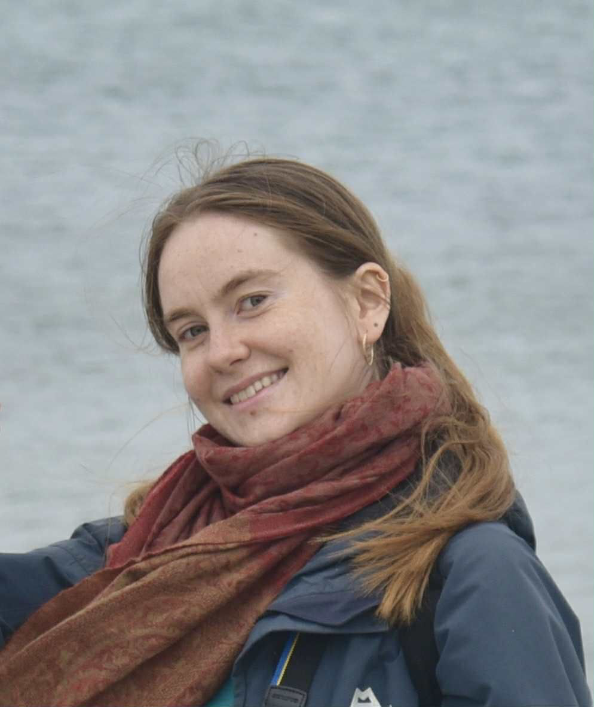

Marta Adamska

Hello! My name is Marta and I am a Postgraduate Researcher at Lancaster University.
I am a final year PhD student interesed in sustainable AI systems, with focus on LLMs. My skills range from building experimental systems to writing professional reports.
During my time as a PhD student I've had a chance to work as a Teaching Assistant on Software Design and AI Concepts modules.
Other than research I enjoy hiking, reading, knitting among many other things. I also love talking about what I do, so if you think my work is interesting let me know!
During my time as a PhD student I've had a chance to work as a Teaching Assistant on Software Design and AI Concepts modules.
Other than research I enjoy hiking, reading, knitting among many other things. I also love talking about what I do, so if you think my work is interesting let me know!
Publications
"Energy-Aware Data-Driven Model Selection in LLM-Orchestrated AI Systems"(2025) Daria Smirnova, Hamid Nasiri, Marta Adamska, Zhengxin Yu, Peter Garraghan
"Green Prompting: Characterizing Prompt-driven Energy Costs of LLM Inference"
(2025) Marta Adamska, Daria Smirnova, Hamid Nasiri, Zhengxin Yu, Peter Garraghan